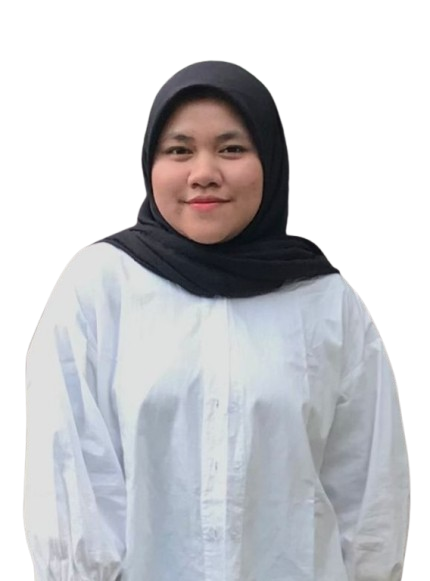

Saya adalah mahasiswa aktif Program Studi D4 Manajemen Informatika di Universitas Negeri Surabaya dengan minat di bidang IT, khususnya dalam Design UI/UX, Web Development, dan Data Analyst. Memiliki pengalaman dalam pengembangan website, desain UI/UX, serta aplikasi mobile. Memiliki kemampuan analisis yang baik, komunikasi dan bekerja dalam tim dengan baik, serta cepat beradaptasi terhadap perkembangan teknologi.
Agustus – Desember 2025
Melakukan pengelolaan dan pembaruan data Configuration Item (CI) pada sistem Helpdesk IT yang mencakup rack, server, network device, storage system, hypervisor, virtual machine, dan application solution untuk mendukung dokumentasi dan pengelolaan infrastruktur IT. Melakukan migrasi data ke platform terpusat menggunakan Baserow.
Email : lyrispramu12@gmail.com
Instagram : @lyris_p